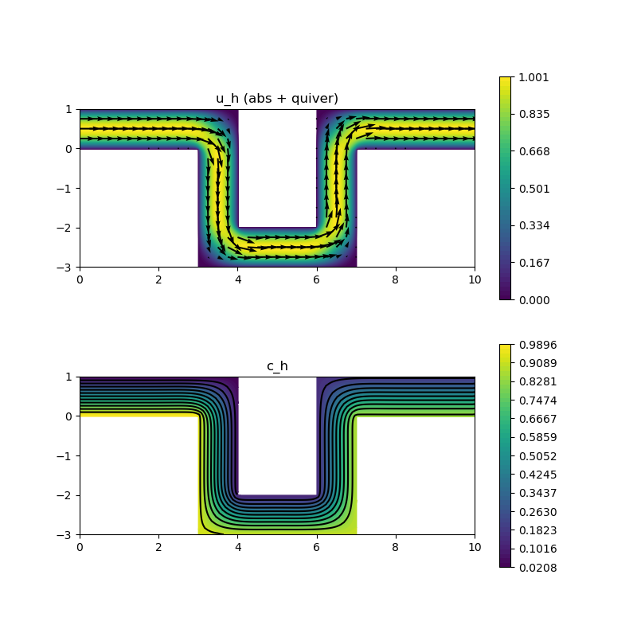

227 : Flow + Transport 2D
This example solve the Stokes problem in a Omega-shaped pipe and then uses the velocity in a transport equation for a species with a certain inlet concentration. Altogether, we are looking for a velocity $\mathbf{u}$, a pressure $\mathbf{p}$ and a species concentration $\mathbf{c}$ such that
\[\begin{aligned} - \mu \Delta \mathbf{u} + \nabla p & = 0\\ \mathrm{div}(u) & = 0\\ - \kappa \Delta \mathbf{c} + \mathbf{u} \cdot \nabla \mathbf{c} & = 0 \end{aligned}\]
with some viscosity parameter and diffusion parameter $\kappa$.
The diffusion coefficient for the species is chosen (almost) zero such that the isolines of the concentration should stay parallel from inlet to outlet. For the discretisation of the convection term in the transport equation two three possibilities can be chosen:
- Classical finite element discretisations $\mathbf{u}_h \cdot \nabla \mathbf{c}_h$
- Pressure-robust finite element discretisation $\Pi_\text{reconst} \mathbf{u}_h \cdot \nabla \mathbf{c}_h$ with some divergence-free reconstruction operator $\Pi_\text{reconst}$
- Upwind finite volume discretisation for $\kappa = 0$ based on normal fluxes along the faces (also divergence-free in finite volume sense)
Observe that a pressure-robust Bernardi–Raugel discretisation preserves this much better than a classical Bernardi–Raugel method. For comparison also a Taylor–Hood method can be switched on which is comparable to the pressure-robust lowest-order method in this example.
Note, that the transport equation is very convection-dominated and no stabilisation in the finite element discretisations was used here (but instead a nonzero $\kappa$). The results are very sensitive to $\kappa$ and may be different if a stabilisation is used (work in progress). Also note, that only the finite volume discretisation perfectly obeys the maximum principle for the concentration but the isolines do no stay parallel until the outlet is reached, possibly due to articifial diffusion.
module Example227_FlowTransport2D
using GradientRobustMultiPhysics
using ExtendableGrids
using GridVisualize
# boundary data
function inlet_velocity!(result,x)
result[1] = 4*x[2]*(1-x[2]);
result[2] = 0;
end
function inlet_concentration!(result,x)
result[1] = 1-x[2];
end
# everything is wrapped in a main function
function main(; verbosity = 0, nrefinements = 5, Plotter = nothing, FVtransport = true, viscosity = 1)
# set log level
set_verbosity(verbosity)
# load mesh and refine
xgrid = simplexgrid("assets/2d_grid_upipe.sg")
xgrid = uniform_refine(xgrid,nrefinements)
# choose one of these (inf-sup stable) finite element type pairs for the flow
#FETypes = [H1P2{2,2}, H1P1{1}]; postprocess_operator = Identity # Taylor--Hood
#FETypes = [H1BR{2}, L2P0{1}]; postprocess_operator = Identity # Bernardi--Raugel
FETypes = [H1BR{2}, L2P0{1}]; postprocess_operator = ReconstructionIdentity{HDIVRT0{2}} # Bernardi--Raugel pressure-robust (RT0 reconstruction)
#FETypes = [H1BR{2}, L2P0{1}]; postprocess_operator = ReconstructionIdentity{HDIVBDM1{2}} # Bernardi--Raugel pressure-robust (BDM1 reconstruction)
#####################################################################################
# negotiate data functions to the package
u_inlet = DataFunction(inlet_velocity!, [2,2]; name = "u (inlet)", dependencies = "X", bonus_quadorder = 2)
c_inlet = DataFunction(inlet_concentration!, [1,2]; name = "c (inlet)", dependencies = "X", bonus_quadorder = 1)
# load Stokes problem prototype and assign boundary data
# (inlet profile in bregion 2, zero Dirichlet at walls 1 and nothing at outlet region 2)
Problem = IncompressibleNavierStokesProblem(2; viscosity = viscosity, nonlinear = false, no_pressure_constraint = true)
Problem.name = "Stokes + Transport"
add_boundarydata!(Problem, 1, [1,3], HomogeneousDirichletBoundary)
add_boundarydata!(Problem, 1, [4], BestapproxDirichletBoundary; data = u_inlet)
# add transport equation of species
add_unknown!(Problem; unknown_name = "c", equation_name = "transport equation")
if FVtransport == true
# finite volume upwind discretisation
FETypeTransport = L2P0{1}
add_operator!(Problem, [3,3], FVConvectionDiffusionOperator(1))
else
# finite element convection and diffusion (very small) operators
FETypeTransport = H1P1{1}
diffusion_FE = 1e-7 # diffusion coefficient for transport equation
add_operator!(Problem, [3,3], LaplaceOperator(diffusion_FE))
add_operator!(Problem, [3,3], ConvectionOperator(1, postprocess_operator, 2, 1))
end
# with boundary data (i.e. inlet concentration)
add_boundarydata!(Problem, 3, [4], InterpolateDirichletBoundary; data = c_inlet)
@show Problem
# generate FESpaces and a solution vector for all 3 unknowns
FES = [FESpace{FETypes[1]}(xgrid), FESpace{FETypes[2]}(xgrid; broken = true), FESpace{FETypeTransport}(xgrid)]
Solution = FEVector(FES)
# first solve the decoupled flow problem equations [1,2]
solve!(Solution, Problem; subiterations = [[1,2]], maxiterations = 5, target_residual = 1e-12)
# then solve the transport equation [3] by finite volumes or finite elements
if FVtransport == true
# pseudo-timestepping until stationarity detected, the matrix stays the same in each iteration
TCS = TimeControlSolver(Problem, Solution, BackwardEuler; subiterations = [[3]], skip_update = [-1], timedependent_equations = [3], T_time = Int)
advance_until_stationarity!(TCS, 10000; maxtimesteps = 100, stationarity_threshold = 1e-12)
else
# solve directly
solve!(Solution, Problem; subiterations = [[3]], maxiterations = 5, target_residual = 1e-12)
end
# print minimal and maximal concentration to check max principle (shoule be in [0,1])
println("\n[min(c),max(c)] = [$(minimum(Solution[3][:])),$(maximum(Solution[3][:]))]")
# plot
p = GridVisualizer(; Plotter = Plotter, layout = (2,1), clear = true, resolution = (800,800))
scalarplot!(p[1,1],xgrid,view(nodevalues(Solution[1]; abs = true),1,:), levels = 0, colorbarticks = 7)
vectorplot!(p[1,1],xgrid,evaluate(PointEvaluator(Solution[1], Identity)), spacing = 0.25, clear = false, title = "u_h (abs + quiver)")
scalarplot!(p[2,1],xgrid,view(nodevalues(Solution[3]),1,:), levels = 11, title = "c_h")
end
endThis page was generated using Literate.jl.
Default output:
julia> Example227_FlowTransport2D.main()
Problem =
PDE-DESCRIPTION
===============
system name = Stokes + Transport
id | unknown name / variables [#A, #T] / equation name
[1] | u / ["u", "v"] / momentum equation
[2] | p / ["p", "q"] / incompressibility constraint
[3] | c / ["c", "d"] / transport equation
LHS block | PDEOperator(s)
[1,1] | (∇u,∇v) (APT = SymmetricBilinearForm, AT = ON_CELLS, regions = [0])
[1,2] | -(p, div(v)) (APT = BilinearForm, AT = ON_CELLS, regions = [0], transposed copy to [2,1] with factor -1.0)
[1,3] | none
[2,1] | none
[2,2] | none
[2,3] | none
[3,1] | none
[3,2] | none
[3,3] | FVConvectionDiffusionOperator{Float64}
RHS block | PDEOperator(s)
[1] | none
[2] | none
[3] | none
BoundaryOperators[1] : HomogeneousDirichletBoundary (bregions = [1, 3])
BestapproxDirichletBoundary (bregions = [4], data = u (inlet))
BoundaryOperators[2] :
BoundaryOperators[3] : InterpolateDirichletBoundary (bregions = [4], data = c (inlet))
┌ Info: ========== Solving Stokes + Transport ==========
│ Equation (1.1) momentum equation for u (discretised by H1BR{2}, ndofs = 49650)
└ Equation (1.2) incompressibility constraint for p (discretised by L2P0{1} (broken), ndofs = 19456)
mask = 1
ITERATION | LSRESIDUAL | NLRESIDUAL
--------------------------------------
1 | 8.423758e-14 | 8.423758e-14
┌ Info: ----- Preparing time control solver for Stokes + Transport using BackwardEuler -----
└ Equation (1.3) transport equation for c (discretised by (L2P0{1} (broken), ndofs = 19456), timedependent = yes
mask = 1
[ Info: Advancing in time until stationarity...
STEP | TIME | LSRESIDUAL | RUNTIME | CHANGE
| | (total) | (s) | u p c
1 | 1.0000e+04 | 1.9835e-16 | 1.805e+00 | 0.0000e+00 0.0000e+00 7.9759e+01
2 | 2.0000e+04 | 2.2439e-16 | 2.133e-02 | 0.0000e+00 0.0000e+00 4.3757e-01
3 | 3.0000e+04 | 2.1291e-16 | 5.627e-03 | 0.0000e+00 0.0000e+00 1.9895e-02
4 | 4.0000e+04 | 2.2382e-16 | 5.572e-03 | 0.0000e+00 0.0000e+00 1.0653e-03
5 | 5.0000e+04 | 2.2504e-16 | 3.984e-03 | 0.0000e+00 0.0000e+00 5.5956e-05
6 | 6.0000e+04 | 2.1085e-16 | 5.562e-03 | 0.0000e+00 0.0000e+00 2.9128e-06
7 | 7.0000e+04 | 2.2409e-16 | 5.584e-03 | 0.0000e+00 0.0000e+00 1.5116e-07
8 | 8.0000e+04 | 2.2234e-16 | 5.540e-03 | 0.0000e+00 0.0000e+00 7.8373e-09
9 | 9.0000e+04 | 2.2342e-16 | 5.547e-03 | 0.0000e+00 0.0000e+00 4.0622e-10
10 | 1.0000e+05 | 2.2309e-16 | 5.480e-03 | 0.0000e+00 0.0000e+00 2.1050e-11
11 | 1.1000e+05 | 2.2375e-16 | 5.476e-03 | 0.0000e+00 0.0000e+00 1.0924e-12
12 | 1.2000e+05 | 2.2380e-16 | 5.478e-03 | 0.0000e+00 0.0000e+00 5.6539e-14 [ Info: stationarity detected after 12 timesteps
[min(c),max(c)] = [0.02083333333332794,0.9895833333333334]